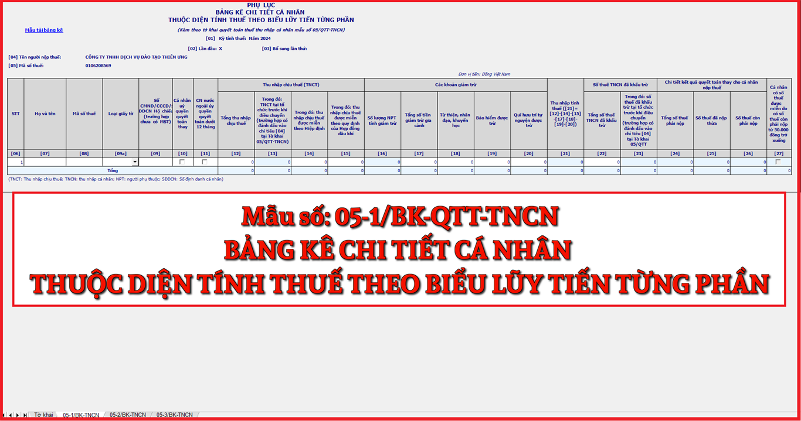

Mẫu phục lục Bảng kê chi tiết cá nhân thuộc diện tính thuế theo biễu lũy tiến từng phần mới nhất năm 2024 là mẫu số: 05-1/BK-QTT-TNCN được ban hành kèm theo Thông tư số 80/2021/TT-BTC. Đây là phụ lục kKèm theo tờ khai quyết toán thuế thu nhập cá nhân mẫu số 05/QTT-TNCN
|
Phụ lục
BẢNG KÊ CHI TIẾT CÁ NHÂN THUỘC DIỆN TÍNH THUẾ THEO BIỂU LŨY TIẾN TỪNG PHẦN (Kèm theo tờ khai quyết toán thuế thu nhập cá nhân mẫu số 05/QTT-TNCN) [01] Kỳ tính thuế: Năm…… [02] Lần đầu: [03] Bổ sung lần thứ: …
[04] Tên người nộp thuế:……………….…………………………………
Đơn vị tiền: Đồng Việt Nam
(TNCT: Thu nhập chịu thuế; TNCN: thu nhập cá nhân; NPT: người phụ thuộc; SĐDCN: Số định danh cá nhân)
Tôi cam đoan số liệu khai trên là đúng và chịu trách nhiệm trước pháp luật về những số liệu đã khai./.
|
|||||||||||||||||||||||||||||||||||||||||||||||||||||||||||||||||||||||||||||||||||||||||||||||||||||||||||||||||||||||||||||||||||||||||||||||||||||||||||||||||||||||
Cách kê khai Bảng kê chi tiết cá nhân thuộc diện tính thuế theo biễu lũy tiến từng phần - mẫu số 05-1/BK-QTT-TNCN theo TT 80/2021 như sau:
I. Phần thông tin chung:
[01] Kỳ tính thuế: Ghi theo năm của kỳ thực hiện khai thuế. Tổ chức, cá nhân trả thu nhập quyết toán thuế TNCN theo năm dương lịch.
[02] Lần đầu: Nếu khai thuế lần đầu thì đánh dấu “x” vào ô vuông.
[03] Bổ sung lần thứ: Nếu khai sau lần đầu thì được xác định là khai bổ sung và ghi số lần khai bổ sung vào chỗ trống. Số lần khai bổ sung được ghi theo chữ số trong dãy chữ số tự nhiên (1, 2, 3….).
[04] Tên người nộp thuế: Ghi rõ ràng, đầy đủ tên của tổ chức, cá nhân trả thu nhập theo Quyết định thành lập hoặc Giấy chứng nhận đăng ký kinh doanh hoặc Giấy chứng nhận đăng ký thuế hoặc Giấy chứng nhận đầu tư.
[05] Mã số thuế: Ghi rõ ràng, đầy đủ mã số thuế của tổ chức, cá nhân trả thu nhập theo Giấy chứng nhận đăng ký thuế hoặc Thông báo mã số thuế.
II. Phần kê khai các chỉ tiêu của bảng:
[06] Số thứ tự: Được ghi lần lượt theo chữ số trong dãy chữ số tự nhiên (1, 2, 3….).
[07] Họ và tên: Ghi rõ ràng, đầy đủ họ và tên của cá nhân cư trú nhận thu nhập từ tiền lương, tiền công có ký hợp đồng lao động từ 03 tháng trở lên, kể cả cá nhân nhận thu nhập chưa đến mức khấu trừ thuế hoặc cá nhân đã thôi việc tính đến thời điểm lập tờ khai theo tờ đăng ký mã số thuế hoặc chứng minh nhân dân/căn cước công dân/hộ chiếu của cá nhân.
[08] Mã số thuế: Ghi rõ ràng, đầy đủ mã số thuế của cá nhân theo Giấy chứng nhận đăng ký thuế dành cho cá nhân hoặc Thông báo mã số thuế hoặc Thẻ mã số thuế do cơ quan thuế cấp.
[09] Số CMND/Hộ chiếu (trường hợp chưa có MST): Trường hợp cá nhân chưa đủ điều kiện để được cấp MST thì ghi số chứng minh nhân dân hoặc hộ chiếu.
[10] Cá nhân ủy quyền quyết toán thay: Cá nhân đủ điều kiện được ủy quyền cho tổ chức, cá nhân trả thu nhập quyết toán thuế thay thì đánh dấu “x” vào chỉ tiêu này.
[11] Cá nhân nước ngoài ủy quyền quyết toán dưới 12 tháng: Cá nhân người nước ngoài đủ điều kiện được ủy quyền cho tổ chức, cá nhân trả thu nhập quyết toán thuế dưới 12 tháng thì đánh dấu “x” vào chỉ tiêu này.
[12] Tổng thu nhập chịu thuế: Là tổng các khoản thu nhập chịu thuế từ tiền lương, tiền công đã trả trong kỳ cho cá nhân cư trú có ký hợp đồng lao động từ 03 tháng trở lên, bao gồm TNCT tại tổ chức trước khi điều chuyển, các khoản tiền lương, tiền công nhận được do được miễn, giảm thuế theo Hiệp định tránh đánh thuế hai lần và theo quy định của Hợp đồng dầu khí.
[13] Trong đó TNCT tại tổ chức trước khi điều chuyển (trường hợp có đánh dấu vào chỉ tiêu [04] tại Tờ khai 05/QTT-TNCN): Là các khoản thu nhập chịu thuế tại tổ chức trước khi điều chuyển.
[14] Trong đó: TNCT được miễn theo Hiệp định: Là các khoản thu nhập chịu thuế làm căn cứ xét miễn, giảm thuế theo Hiệp định tránh đánh thuế hai lần.
[15] Trong đó: TNCT được miễn theo quy định của Hợp đồng dầu khí: Là các khoản thu nhập chịu thuế được miễn theo quy định của Hợp đồng dầu khí (nếu có phát sinh)
[16] Số lượng NPT tính giảm trừ: Là tổng số người phụ thuộc được tính giảm trừ gia cảnh cho cá nhân đã đăng ký giảm trừ gia cảnh theo quy định, chỉ tiêu [16] bằng tổng số người phụ thuộc được kê khai trên Phụ lục mẫu số 05-3/BK-QTT-TNCN.
[17] Tổng số tiền giảm trừ gia cảnh: Là các khoản giảm trừ cho bản thân người nộp thuế và các khoản giảm trừ cho người phụ thuộc theo quy định của kỷ tính thuế.
[18] Từ thiện, nhân đạo, khuyến học: Là các khoản chi đóng góp từ thiện, nhân đạo, khuyến học của kỳ tính thuế.
[19] Bảo hiểm được trừ: Là các khoản đóng góp bảo hiểm gồm: bảo hiểm xã hội, bảo hiểm y tế, bảo hiểm thất nghiệp, bảo hiểm trách nhiệm nghề nghiệp đối với một số ngành nghề phải tham gia bảo hiểm bắt buộc của kỳ tính thuế (trường hợp người lao động được điều chuyển trong cùng hệ thống và ủy quyền cho tổ chức mới quyết toán thay thì bao gồm cả khoản bảo hiểm được trừ (nếu có) của người lao động tại tổ chức cũ).
[20] Quỹ hưu trí tự nguyện được trừ: Là tổng các khoản đóng vào Quỹ hưu trí tự nguyện theo thực tế phát sinh nhưng tối đa không quá một (01) triệu đồng/tháng (12 triệu đồng/năm) của kỳ tính thuế.
[21] Thu nhập tính thuế: Chỉ tiêu [21] = [12] - [14] - [15] - [17] - [18] - [19]- [20]
[22] Số thuế TNCN đã khấu trừ: Là số thuế TNCN mà tổ chức, cá nhân trả thu nhập đã khấu trừ của cá nhân cư trú có hợp đồng lao động từ 03 tháng trở lên trong kỳ. Trường hợp người lao động được điều chuyển trong cùng hệ thống và ủy quyền cho tổ chức mới quyết toán thay thì bao gồm cả số thuế TNCN đã khấu trừ (nếu có) của người lao động tại tổ chức cũ.
[23] Trong đó: Số thuế đã khấu trừ tại tổ chức trước khi điều chuyển (trường hợp có đánh dấu vào chỉ tiêu [04] tại Tờ khai 05/QTT-TNCN): Là số thuế đã khấu trừ tại tổ chức trước khi điều chuyển.
[24] Tổng số thuế phải nộp: Là tổng số thuế phải nộp của cá nhân uỷ quyền cho tổ chức, cá nhân trả thu nhập quyết toán thuế thay. Chỉ tiêu [24] = [21] x thuế suất biểu thuế lũy tiến theo kỳ tính thuế.
[25] Số thuế đã nộp thừa: Là số thuế đã nộp thừa của cá nhân uỷ quyền cho tổ chức, cá nhân trả thu nhập quyết toán thuế thay. Chỉ tiêu [25] = [22] + [23]- [24] > 0.
[26] Số thuế còn phải nộp: Là số thuế còn phải nộp của cá nhân uỷ quyền cho tổ chức, cá nhân trả thu nhập quyết toán thuế thay. Chỉ tiêu [26] = [24] - [22]- [23] > 0.
[27] Tổng số cá nhân có số thuế được miễn do có số thuế còn phải nộp từ 50.000 đồng trở xuống: cá nhân có số thuế được miễn do có số thuế còn phải nộp từ 50.000 đồng trở xuống thì đánh dấu “x” vào chỉ tiêu này.
[28] Tổng thu nhập chịu thuế: Chỉ tiêu [28] bằng tổng cột chỉ tiêu [12].
[29] Tổng TNCT tại tổ chức trước khi điều chuyển (trường hợp có đánh dấu vào chỉ tiêu [04] tại Tờ khai 05/QTT-TNCN): Chỉ tiêu [29] bằng tổng cột chỉ tiêu [13].
[30] Tổng TNCT được miễn theo Hiệp định: Chỉ tiêu [30] bằng tổng cột chỉ tiêu [14].
[31] Tổng TNCT được miễn theo quy định của Hợp đồng dầu khí: Chỉ tiêu [31] bằng tổng cột chỉ tiêu [15].
[32] Tổng số lượng NPT tính giảm trừ: Chỉ tiêu [32] bằng tổng cột chỉ tiêu [16].
[33] Tổng số tiền giảm trừ gia cảnh: Chỉ tiêu [33] bằng tổng cột chỉ tiêu [17].
[34] Tổng các khoản giảm trừ từ thiện, nhân đạo, khuyến học: Chỉ tiêu [34] bằng tổng cột chỉ tiêu [18].
[35] Tổng các khoản bảo hiểm được trừ: Chỉ tiêu [35] bằng tổng cột chỉ tiêu [19].
[36] Tổng các khoản giảm trừ Quỹ hưu trí tự nguyện được trừ: Chỉ tiêu [36] bằng tổng cột chỉ tiêu [20].
[37] Tổng thu nhập tính thuế: Chỉ tiêu [37] bằng tổng cột chỉ tiêu [21].
[38] Tổng số thuế TNCN đã khấu trừ: Chỉ tiêu [38] bằng tổng cột chỉ tiêu [22].
[39] Tổng số Số thuế đã khấu trừ tại tổ chức trước khi điều chuyển (trường hợp có đánh dấu vào chỉ tiêu [04] tại Tờ khai 05/QTT-TNCN): Chỉ tiêu [39] bằng tổng cột chỉ tiêu [23].
[40] Tổng số thuế phải nộp: Chỉ tiêu [40] bằng tổng cột chỉ tiêu [24].
[41] Tổng số thuế đã nộp thừa: Chỉ tiêu [41] bằng tổng cột chỉ tiêu [25].
[42] Tổng số thuế còn phải nộp: Chỉ tiêu [42] bằng tổng cột chỉ tiêu [26].
[43] Tổng số cá nhân có số thuế được miễn do có số thuế còn phải nộp từ 50.000 đồng trở xuống: Chỉ tiêu [43] bằng tổng cột chỉ tiêu [27].
